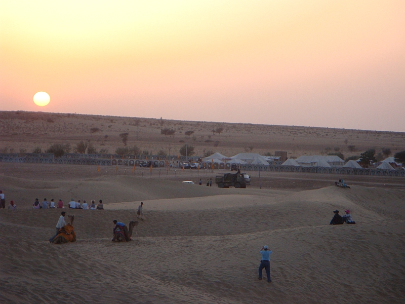
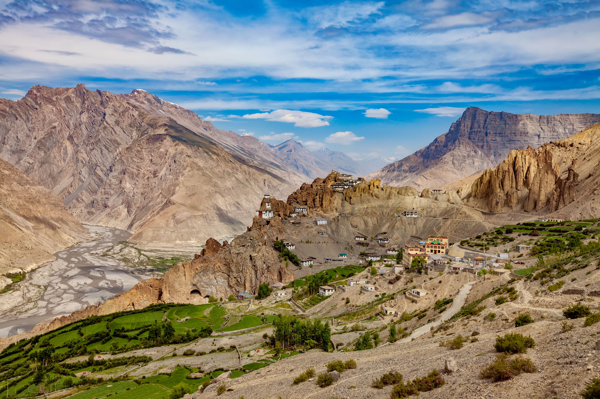
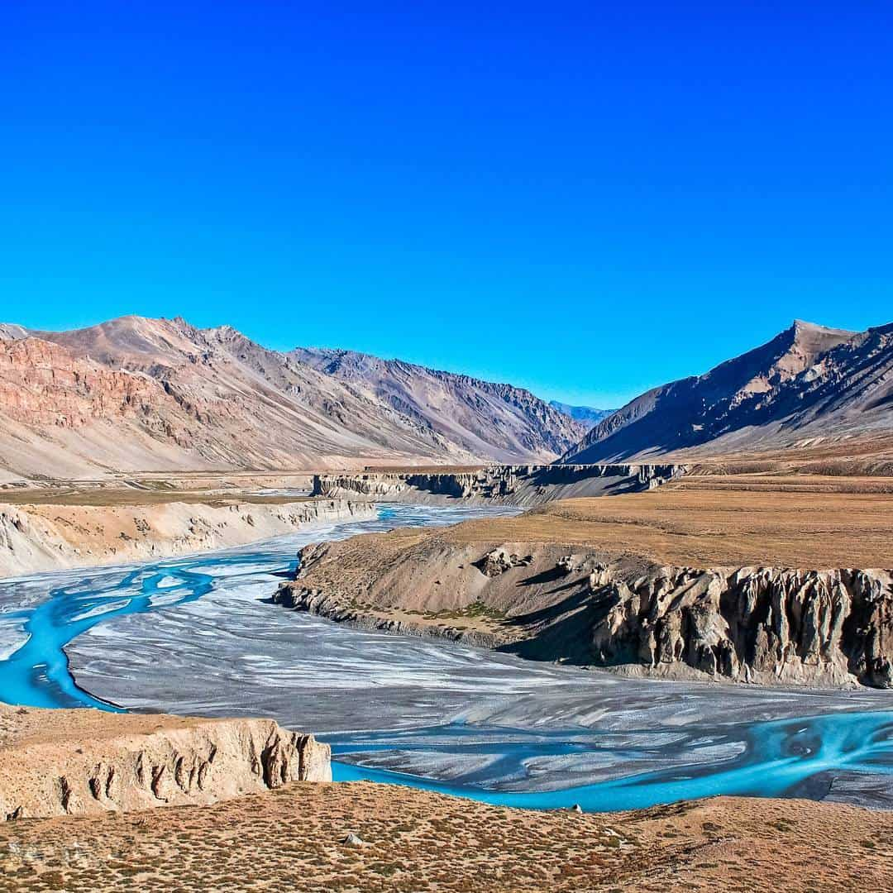

1. Jaisalmer, Rajasthan
One of the major deserts of India, Jaisalmer is a major tourist spot located in the northwestern state of Rajasthan in India.
It is called the 'golden city' due to its bounteous golden dunes flowing in the Thar Desert. Jaisalmer is adorned with lakes,
ornate Jain temples, havelis and castles clad in golden yellowish sandstone. Climb on to the camel saddle and make your way through
this desert or camp under the night sky in this golden land for an unforgettable experience.

2. Spiti Valley, Himachal Pradesh
Long winding roads and picturesque valleys presenting glimpses of cold deserts and snow-crowned mountains, with intermittent greenery
and picture-perfect villages welcome you when you set foot into Spiti Valley. Bordered on all sides by the Himalayas, Spiti Valley,
located in Himachal Pradesh, has an altitude of 12,500 feet above sea level, and gets around 250 days of sunshine in the year, making
it one of the coldest places in the country. With the thick Himalayan snow cutting Spiti off from the rest of the country for around
6 months a year, the summer months are the only time Spiti is directly accessible via motorway.

3. Rann of Kutch
The Rann of Kutch is a large area of salt marshes that span the border between India and Pakistan.
It is located mostly in Gujarat (primarily the Kutch district), India, and in some parts of Sindh, Pakistan. It is divided
into the Great Rann and Little Rann. The nothingness for miles is both nerve wracking and stunning with small oasis of water bodies and
shrub forests doubling up as homes for pink flamingoes and wild asses. Tribal hamlets with cylindrical mud bhungas (huts) are
the epicenter for Kutchi embroidery, tie and dye, leatherwork, pottery, bell metal craft and the famous Rogan painting by the
only surviving expert family. Approximately 200 km east of the Rann, is the Little Rann of Kutch, which houses the 4953-sq-km
Wild Ass Sanctuary. It homes the only remaining population of the chestnut-coloured Indian wild ass (khur), as well as
blue-bulls, blackbuck and chinkara.

4. Nubra Valley, Jammu & Kashmir
Nubra Valley lies in the union territory of Jammu & Kashmir, at a distance of around 140 Km from Leh. Located on the ancient Silk Route,
the valley has Shyok and Nubra river snaking through it and some beautiful monasteries.The region is currently under military supervision
because the road further leads to the Siachen base camp, which happens to be the highest battlefield in the world. All foreign nationals
need to get protected area permit, and Indian travellers need to obtain an Inner Line Permit to enter the Nubra valley. You need to hand
over the photocopies of your travel permits to the soldiers in the Khardung La pass. Most tourists travel to Nubra Valley from Leh through
Khardung La.